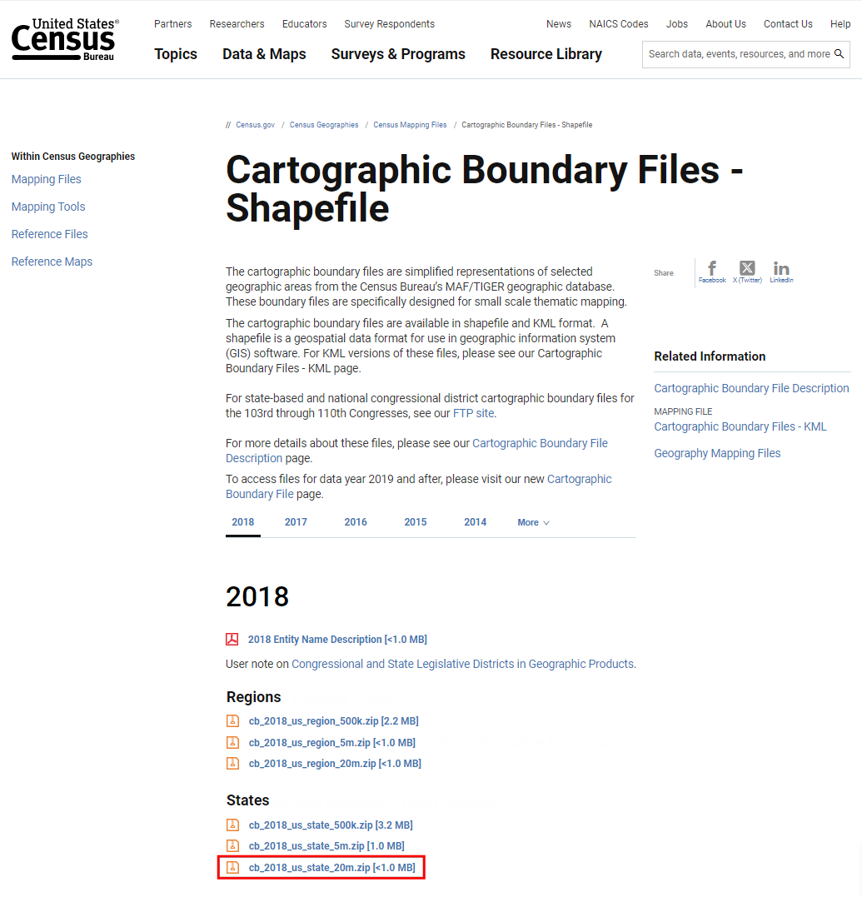
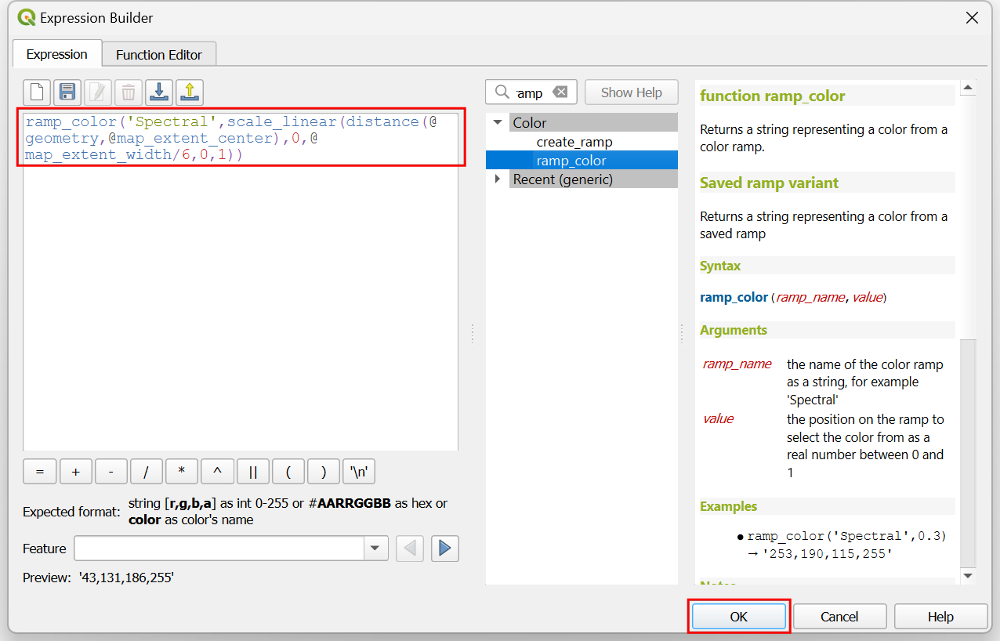

Prostorsko združevanje podatkov (QGIS3)¶
Združevanje podatkov je klasičen GIS problem. Gre za prenos atributov iz enega sloja v drug sloj na podlagi njihove prostorske povezave. V QGIS-u imamo za to na voljo orodje Join attributes by location.
Pregled naloge¶
Uporabili bomo 2 sloja - vektorski sloj z mejami okrožij New Yorka in sloj z oceno cestišč za vse ulice v New Yorku. Prva naloga bo, da z uporabo metode prostorskega združevanja in summary algoritma poiščemo povprečno oceno ulic v posameznem okrožju. Druga naloga bo, da z metodo prostorskega združevanja ena proti več, one-to-many, pripišemo ulicam imena okrožij.
Česa se bomo še naučili¶
Ustvarjanja filtrov za začasno izključitev določenih funkcij iz izračuna.
Pridobivanja podatkov¶
NICE Open Data Portal je odličen vir brezplačnih podatkov za mesto New York.
Z uporabo možnosti Export na portalu prenesite datoteko Borough Boundaries zip.
Z uporabo možnosti Export na portalu prenesite datoteko Street Pavement Rating zip.

Lahko jih prenesete tudi neposredno na spodnji povezavi:
Vir podatkov [CITYOFNY]
Postopek¶
V brskalniku QGIS poiščite datoteko
nybb_19a.zipin jo razširite. Izberite sloj``nybb_19a/nybb.shp`` in ga dodajte v glavno okno. To je sloj poligonov, ki zajema meje okrožij v New Yorku.

Nato poiščite datoteko
V_SSS_SEGMENTRATING_1.zipin jo razširite. Izberite slojdot_V_SSS_SEGMENTRATING_1_20190129.shpin ga dodajte med podatkovne sloje. To je linijski sloj vseh ulic v mestu.

Proučite atribute, ki so na voljo za vsak grafični objekt v sloju
dot_V_SSS_SEGMENTRATING_1_20190129. Kliknite z desno tipko na miški in izberite Open Attribute Table.

Opazili boste atribut
Rating_B, ki zajema vrednosti v razponu od 0 do 10 in predstavlja oceno segmenta ulice. AtributRatingWordpredstavlja opisno oceno. AtributRating_Blahko uporabite za izračun povprečne ocene.

Morda ste opazili, da imajo nekateri atributi oceno
NR. To so segmenti, ki niso ocenjeni. Njihova vključitev v analizo ne bo pravilna. Preden izvedete prostorsko združevanje nastavite**Filter** za izključitev izbranih zapisov NR. Z desno tipko na miški kliknite na slojdot_V_SSS_SEGMENTRATING_1_20190129in izberite Filter`.

V Query Builder vnesite izraz, s katerim izberete vse zapise, ki niso ocenjeni z
NR. Izraz lahko sestavite tudi interaktivno, tako da kliknete na Field, Operator in izberete ustrezno Value. Kliknite OK.
"RatingWord" != 'NR'
Opazili boste, da ima zdaj sloj``dot_V_SSS_SEGMENTRATING_1_20190129`` ikono filtra, ki označuje, da je zanj uporabljen aktiven filter. S tem slojem izvedite prostorsko združevanje. Pojdite na .

Poiščite orodje . Zaženete ga z dvojnim klikom.

V pogovornem oknu Join attribute by location (summary) z Input layer izberite vhodni sloj
nybb. Sloj ulicdot_V_SSS_SEGMENTRATING_1_20190129bo dodan kot Join layer. Za Geometry predicate uporabite privzete nastavitve z vrednostjoIntersects. V:guilabel:Fields to sumarize kliknite gumb … .

Opomba
Nasvet za pomoč pri izbiri pravilnih vhodnih in združenih slojev: Vhodni sloj je tisti, ki bo z metodo prostorskega združevanja spremenjen tako, da bodo dodani novi atributi. Ker želimo, da se vrednost povprečne ocene doda sloju okrožij, bo ta sloj dan kot vhodni sloj.
Izberite
Rating_Bin kliknite OK.

Podobno kliknite gumb … v Summaries to calculate.

Kot operator izberite
meanin kliknite OK. Zdaj ste pripravljeni na začetek obdelave. Kliknite Run.

Algoritem obdelave bo obdelal grafične objete in pri tem uporabil prostorsko združevanje. Preverite, ali je bila obdelava uspešna, in kliknite Close.

V glavnem oknu QGIS-a boste videli nov sloj
Joined layer. Odprite atributno tabelo. Videli boste, da je vhodnemu sloju okrožij dodan nov atributRating_B_means povprečno oceno vseh ulic, ki se stikajo z izbranim pojavom.

Zdaj lahko izvedete obratno operacijo. Včasih analiza zahteva pridobitev atributov iz drugega sloja na podlagi prostorskega razmerja, vendar pri tem ne sme uporabiti summary. Za takšno analizo lahko uporabite orodje``Join attribute by location``. Naloga je, da vsakemu elementu v sloju ulic dodate imena okrožij glede na to, s katerim poligonom okrožij je v preseku. Preden zaženete ta algoritem, odstranite filter v sloju
dot_V_SSS_SEGMENTRATING_1_20190129. Kliknite ikono filtra in pritisnite gumb Clear v oknu Query Builder. Kliknite OK.

Med podatkovnimi sloji Layers odznačite sloj
Joined layer. Med orodji poiščite algoritem in ga zaženite z dvakratnim klikom.

Izberite
dot_V_SSS_SEGMENTRATING_1_20190129kot Input layer innybbkot Join layer. Geometry predicate lahko pustite privzeto vrednostIntersects. Kliknite gumb … v Fields to add in izberiteBoroName. Kliknite OK.

Ulica lahko prečka mejo okrožja, zato kot Join type izberite``Crate separate feature for each located feature (one-to-many)``. Kliknite Run.

Po končani obdelavi odprite atributno tabelo novega sloja dodanega kot Joined layer`. Videli boste, da je vsaki ulici pripisan nov atribut
BoroName.

If you want to give feedback or share your experience with this tutorial, please comment below. (requires GitHub account)